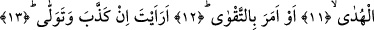

NAMAZDAN MENEDENİ
GÖRDÜN MÜ?
9. (Peygamber’i namazdan) men edeni gördün mü?
10. Namaz kılarken bir kulu.
11. Ne dersin, o (Peygamber) doğru yolda ise
12. Yahut takvâyı emrediyorsa!
13. Ne dersin o (men eden, Peygamber’i) yalanlıyor ve doğru yoldan yüz
çeviriyorsa!
14. (Bu adam) Allah’ın, (yaptıklarını) gördüğünü bilmez mi?
15. Hayır, hayır! Eğer vazgeçmezse, derhal onu alnından (perçeminden),
16. O yalancı, günahkâr alından (perçemden) yakalarız (Cehenneme atarız).
17. O, hemen gidip meclisini (kendi taraftarlarını) çağırsın.
18. Biz de zebânîleri çağıracağız.
19. Hayır! Ona uyma! Allah’a secde et ve (yalnızca O’na) yaklaş!
Âyetin başındaki soru edatı, bu işin hayret verici bir durum olduğunu vurgulamak
içindir. Yine aynı âyetin başındaki “ru’yet” görmek kalb ile görmek değil, gözle görmek
anlamınadır. Bu âyetteki hitab, görebilen herkesedir. Aynı âyetteki “abden” kelimesinin
elif-lam takısı olmadan, nekre getirilmesinin sebebi, Peygamber (s.a.) Efendimiz’in
şânını yüceltmek içindir. Burada âdetâ şöyle denmiş olmaktadır: Kullukta mahlukatın en
mükemmelini namazdan; Rabbine ibâdet etmekten men edeni gördün mü? Âyette “seni
men edeni” denecek iken, “bir kulu men edeni” denmesi bize gösteriyor ki bu alakoyma,
kulu mevlasına hizmetten alakoymadır ve bundan daha çirkin bir fiil yoktur.